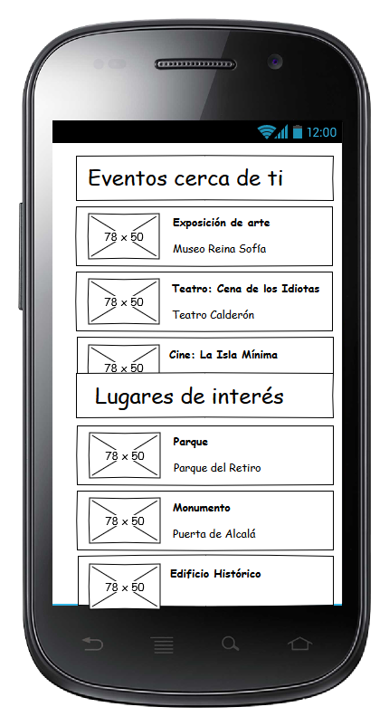

Group 11 - Application Requirements
Este documento es un documento HTML que especifica los requisitos concretos de la aplicación que se construirá usando los datasets escogidos y que incluye las maquetas de las interfaces de usuario esperadas.
Requisitos
Permitira conocer las bibliotecas y bibliobuses de Madrid
Permitira conocer los eventos de bibliotecas
Con el conocimiento de ambos, se podra saber la direccion de los eventos y como llegar a ellos
Mock-ups
